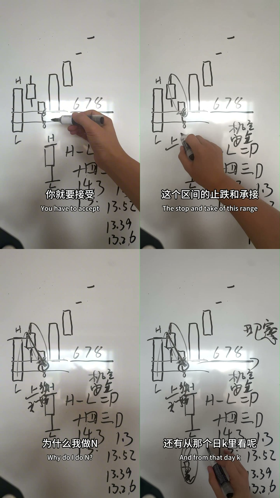
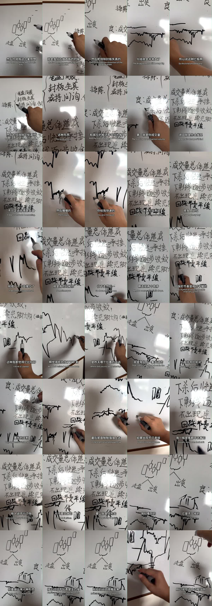

博主战法视频 · 原始画面抽帧索引
生成于 2026-11-16 · 绕开"主页最近 30 条"限制，按视频 ID 直接打开单条详情页取直链 → 下载 → ffmpeg 抽帧 · 涨红跌绿口径
关键结论：凯心讲 N 字的口播共 37 条，其中 18 条在主页抓取范围（21 条）之外。用单条详情页方法，范围外的视频（如 N 字第九集 7702721386103632271）已实测能完整下载并抽帧——你要的"30 条以外也能下"完全成立，且已固化为常驻脚本
dy_video_frames.py。① 凯心 · N 字战法白板手绘图解 范围外视频
从 120/150/180/210 秒抽的高清帧。白板上手绘 N 字三笔结构，可清楚看到：
- 第一笔长阳标注
H（顶）L（底），中间回踩，右侧第678笔再起 - 公式
H − L = D（第一笔振幅），上沿 1/2 ↔ 1/3，价格标尺 14.3 / 13.5 / 13.39 / 13.26 - 中文标注 "观察"、"这个区间的止跌和承接" —— 正是回测里"必须出现止跌证据才下单"那条规则

这张原始图解印证了此前回测的定义方向是对的：H−L=D、六七八买点 = L+0.2/0.3/0.4D、"止跌承接"前提。因此 N 字回测"全变体负 edge"的结论建立在正确定义上，可信度更高。分时刻画（零轴、黄线承接、下影收敛）日 K 仍无法量化，属已知边界。
② 凯心 · N 字战法第八集时间轴 范围外视频

③ 花臂博士 · 5 张图讲义画面
讲义电子版分条列出"图形一～图形五"，每种形态配红/蓝 K 线小图 + 红圈标注重点；末几帧出现"图形二 · 平台战法"的锯齿形示意。讲义在视频里是拍屏拍摄，小字未对焦，靠抽帧无法完全还原文字，但形态小图与编号清晰可见。

④ 复用工具与产出清单
| 项目 | 说明 |
|---|---|
| 抽帧脚本 | 投资工作台_full/src/dy_video_frames.py（已部署服务器）。用法：python3 dy_video_frames.py --ids ID1,ID2 --out 目录 --step 12，自动取直链+下载+抽帧+manifest |
| 取直链原理 | Playwright 带 Cookie 打开 douyin.com/video/{id}，拦 aweme/detail 接口拿 play_addr；与"最近 30 条"无关 |
| 看视频按钮 | 已加到线上博主情报每条视频（v95，sw 缓存已 bump），永久链接 douyin.com/video/{aweme_id} |
| 口播原文 | 凯心 14 条 + 花博 8 条原始素材在 02.输出区/*口播原始素材*.json；全量 382 条在 全博主战法_口播全量导出_2026-11-16.json |
边界：抽帧是教学视频画面，仅供你核对形态定义；不构成投资建议。此前 23 战法 + 5 张图 + N 字 + ETF 的回测结论不变，详见各研究报告。